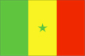

{kind=link}


![[Country map of Senegal]](../maps/sg-map.jpg)
| Senegal |  |
|
| | |
| Introduction |
Background: Independent from France in 1960, Senegal joined with The Gambia to form the nominal confederation of Senegambia in 1982. However, the envisaged integration of the two countries was never carried out, and the union was dissolved in 1989. Despite peace talks, a southern separatist group sporadically has clashed with government forces since 1982. Senegal has a long history of participating in international peacekeeping.
| Geography |
Location: Western Africa, bordering the North Atlantic Ocean, between Guinea-Bissau and Mauritania
Geographic coordinates: 14 00 N, 14 00 W
Map references: Africa
Area:
total:
196,190 sq km
land:
192,000 sq km
water:
4,190 sq km
Area - comparative: slightly smaller than South Dakota
Land boundaries:
total:
2,640 km
border countries:
The Gambia 740 km, Guinea 330 km, Guinea-Bissau 338 km, Mali 419 km, Mauritania 813 km
Coastline: 531 km
Maritime claims:
contiguous zone:
24 nm
continental shelf:
200 nm or to the edge of the continental margin
exclusive economic zone:
200 nm
territorial sea:
12 nm
Climate: tropical; hot, humid; rainy season (May to November) has strong southeast winds; dry season (December to April) dominated by hot, dry, harmattan wind
Terrain: generally low, rolling, plains rising to foothills in southeast
Elevation extremes:
lowest point:
Atlantic Ocean 0 m
highest point:
unnamed feature near Nepen Diakha 581 m
Natural resources: fish, phosphates, iron ore
Land use:
arable land:
12%
permanent crops:
0%
permanent pastures:
16%
forests and woodland:
54%
other:
18% (1993 est.)
Irrigated land: 710 sq km (1993 est.)
Natural hazards: lowlands seasonally flooded; periodic droughts
Environment - current issues: wildlife populations threatened by poaching; deforestation; overgrazing; soil erosion; desertification; overfishing
Environment - international agreements:
party to:
Biodiversity, Climate Change, Desertification, Endangered Species, Hazardous Wastes, Law of the Sea, Marine Life Conservation, Nuclear Test Ban, Ozone Layer Protection, Ship Pollution, Wetlands, Whaling
signed, but not ratified:
Marine Dumping
Geography - note: The Gambia is almost an enclave of Senegal
| People |
Population: 9,987,494 (July 2000 est.)
Age structure:
0-14 years:
45% (male 2,237,678; female 2,213,632)
15-64 years:
52% (male 2,501,649; female 2,729,412)
65 years and over:
3% (male 152,236; female 152,887) (2000 est.)
Population growth rate: 2.94% (2000 est.)
Birth rate: 37.94 births/1,000 population (2000 est.)
Death rate: 8.57 deaths/1,000 population (2000 est.)
Net migration rate: 0 migrant(s)/1,000 population (2000 est.)
Sex ratio:
at birth:
1.03 male(s)/female
under 15 years:
1.01 male(s)/female
15-64 years:
0.92 male(s)/female
65 years and over:
1 male(s)/female
total population:
0.96 male(s)/female (2000 est.)
Infant mortality rate: 58.08 deaths/1,000 live births (2000 est.)
Life expectancy at birth:
total population:
62.19 years
male:
60.6 years
female:
63.82 years (2000 est.)
Total fertility rate: 5.21 children born/woman (2000 est.)
Nationality:
noun:
Senegalese (singular and plural)
adjective:
Senegalese
Ethnic groups: Wolof 43.3%, Pular 23.8%, Serer 14.7%, Jola 3.7%, Mandinka 3%, Soninke 1.1%, European and Lebanese 1%, other 9.4%
Religions: Muslim 92%, indigenous beliefs 6%, Christian 2% (mostly Roman Catholic)
Languages: French (official), Wolof, Pulaar, Jola, Mandinka
Literacy:
definition:
age 15 and over can read and write
total population:
33.1%
male:
43%
female:
23.2% (1995 est.)
| Government |
Country name:
conventional long form:
Republic of Senegal
conventional short form:
Senegal
local long form:
Republique du Senegal
local short form:
Senegal
Data code: SG
Government type: republic under multiparty democratic rule
Capital: Dakar
Administrative divisions: 10 regions (regions, singular - region); Dakar, Diourbel, Fatick, Kaolack, Kolda, Louga, Saint-Louis, Tambacounda, Thies, Ziguinchor
Independence: 4 April 1960 from France; complete independence was achieved upon dissolution of federation with Mali on 20 August 1960 (The Gambia and Senegal signed an agreement on 12 December 1981 (constituted February 1982) that called for the creation of a loose confederation to be known as Senegambia, but the agreement was dissolved on 30 September 1989)
National holiday: Independence Day, 4 April (1960)
Constitution: 3 March 1963, revised 1991
Legal system: based on French civil law system; judicial review of legislative acts in Constitutional Court; the Council of State audits the government's accounting office; Senegal has not accepted compulsory ICJ jurisdiction
Suffrage: 18 years of age; universal
Executive branch:
chief of state:
President Abdoulaye WADE (since NA 2000)
head of government:
Prime Minister Niasse MOUSTAPHA (since NA 2000)
cabinet:
Council of Ministers appointed by the prime minister in consultation with the president
elections:
president elected by popular vote for a seven-year term; election last held 27 February 2000 (next to be held 27 February 2007); prime minister appointed by the president
election results:
Abdoulaye WADE elected president; percent of vote in the second round of voting - Abdoulaye WADE (PDS) NA%, Abdou DIOUF (PS) NA%
Legislative branch:
unicameral National Assembly or Assemblee Nationale (140 seats; members are elected by direct popular vote to serve five-year terms)
elections:
last held 24 May 1998 (next to be held NA May 2003)
election results:
percent of vote by party - PS 50%, PDS 19%, UDS-R 13%, And Jef 5%, LD-MPT 4%, CDP 2%, FSD 1%, PDS-R 1%, RND 1%, BGC 1%, PIT 1%, other 2%; seats by party - PS 93, PDS 23, UDS-R 11, And Jef 4, LD-MPT 3, CDP 1, FSD 1, PDS-R 1, RND 1, BGC 1, PIT 1
Judicial branch: under the terms of a reform of the judicial system implemented in 1992, the principal organs of the judiciary are as follows: Constitutional Court; Council of State; Court of Final Appeals or Cour de Cassation; Court of Appeals
Political parties and leaders: African Party for Democracy and Socialism or And Jef (also known as PADS/AJ) [Landing SAVANE, secretary general]; African Party of Independence [Majhemout DIOP]; Democratic and Patriotic Convention or CDP (also known as Garab-Gi) [Dr. Iba Der THIAM]; Democratic League-Labor Party Movement or LD-MPT [Dr. Abdoulaye BATHILY]; Front for Socialism and Democracy or FSD [Cheikh Abdoulaye DIEYE]; Gainde Centrist Bloc or BGC [Jean-Paul DIAS]; Independence and Labor Party or PIT [Amath DANSOKHO]; National Democratic Rally or RND [Madier DIOUF]; Senegalese Democratic Party or PDS [Abdoulaye WADE]; Senegalese Democratic Party-Renewal or PDS-R [Serigne Lamine DIOP, secretary general]; Senegalese Democratic Union-Renewal or UDS-R [Mamadou Puritain FALL]; Socialist Party or PS [President Abdou DIOUF]; Union for Democratic Renewal or URD [Djibo Leyti KA]; other small parties
Political pressure groups and leaders: labor; Muslim brotherhoods; students; teachers
International organization participation: ACCT, ACP, AfDB, CCC, ECA, ECOWAS, FAO, FZ, G-15, G-77, IAEA, IBRD, ICAO, ICC, ICFTU, ICRM, IDA, IDB, IFAD, IFC, IFRCS, ILO, IMF, IMO, Inmarsat, Intelsat, Interpol, IOC, IOM, ITU, MIPONUH, NAM, OAU, OIC, OPCW, PCA, UN, UNCTAD, UNESCO, UNIDO, UNIKOM, UNMIBH, UNMIK, UNTAET, UPU, WADB, WAEMU, WCL, WFTU, WHO, WIPO, WMO, WToO, WTrO
Diplomatic representation in the US:
chief of mission:
Ambassador Mamadou Mansour SECK
chancery:
2112 Wyoming Avenue NW, Washington, DC 20008
telephone:
[1] (202) 234-0540
Diplomatic representation from the US:
chief of mission:
Ambassador Harriet L. ELAM-THOMAS
embassy:
Avenue Jean XXIII at the corner of Avenue Kleber, Dakar
mailing address:
B. P. 49, Dakar
telephone:
[221] 823-4296, 823-7384
FAX:
[221] 822-2991
Flag description: three equal vertical bands of green (hoist side), yellow, and red with a small green five-pointed star centered in the yellow band; uses the popular pan-African colors of Ethiopia
| Economy |
Economy - overview: In January 1994, Senegal undertook a bold and ambitious economic reform program with the support of the international donor community. This reform began with a 50% devaluation of Senegal's currency, the CFA franc, which is linked at a fixed rate to the French franc. Government price controls and subsidies have been steadily dismantled. After seeing its economy contract by 2.1% in 1993, Senegal made an important turnaround, thanks to the reform program, with real growth in GDP averaging 5% annually in 1995-99. Annual inflation has been pushed down to 2%, and the fiscal deficit has been cut to less than 1.5% of GDP. Investment rose steadily from 13.8% of GDP in 1993 to 16.5% in 1997. As a member of the West African Economic and Monetary Union (UEMOA), Senegal is working toward greater regional integration with a unified external tariff. Senegal also realized full Internet connectivity in 1996, creating a miniboom in information technology-based services. Private activity now accounts for 82% of GDP. On the negative side, Senegal faces deep-seated urban problems of chronic unemployment, juvenile delinquency, and drug addiction. Real GDP growth is expected to rise above 6%, while inflation is likely to hold at 2% in 2000-2001.
GDP: purchasing power parity - $16.6 billion (1999 est.)
GDP - real growth rate: 5% (1999 est.)
GDP - per capita: purchasing power parity - $1,650 (1999 est.)
GDP - composition by sector:
agriculture:
19%
industry:
20%
services:
61% (1997 est.)
Population below poverty line: NA%
Household income or consumption by percentage share:
lowest 10%:
1.4%
highest 10%:
42.8% (1991)
Inflation rate (consumer prices): 2% (1999 est.)
Labor force: NA
Labor force - by occupation: agriculture 60%
Unemployment rate: NA%; urban youth 40%
Budget:
revenues:
$885 million
expenditures:
$885 million, including capital expenditures of $125 million (1996 est.)
Industries: agricultural and fish processing, phosphate mining, fertilizer production, petroleum refining, construction materials
Industrial production growth rate: 7% (1998 est.)
Electricity - production: 1.2 billion kWh (1998)
Electricity - production by source:
fossil fuel:
100%
hydro:
0%
nuclear:
0%
other:
0% (1998)
Electricity - consumption: 1.116 billion kWh (1998)
Electricity - exports: 0 kWh (1998)
Electricity - imports: 0 kWh (1998)
Agriculture - products: peanuts, millet, corn, sorghum, rice, cotton, tomatoes, green vegetables; cattle, poultry, pigs; fish
Exports: $925 million (f.o.b., 1998)
Exports - commodities: fish, ground nuts (peanuts), petroleum products, phosphates, cotton
Exports - partners: France 22%, Italy, India, Cote d'Ivoire, Mali (1998)
Imports: $1.2 billion (f.o.b., 1998)
Imports - commodities: foods and beverages, consumer goods, capital goods, petroleum products
Imports - partners: France 36%, other EU countries, Nigeria, Cameroon, Cote d'Ivoire, Algeria, US, China, Japan (1998)
Debt - external: $3.4 billion (1998 est.)
Economic aid - recipient: $647.5 million (1995)
Currency: 1 Communaute Financiere Africaine franc (CFAF) = 100 centimes
Exchange rates:
Communaute Financiere Africaine francs (CFAF) per US$1 - 647.25 (January 2000), 615.70 (1999), 589.95 (1998), 583.67 (1997), 511.55 (1966), 499.15 (1995)
note:
since 1 January 1999, the CFAF is pegged to the euro at a rate of 655.957 CFA francs per euro
Fiscal year: calendar year
| Communications |
Telephones - main lines in use: 82,000 (1995)
Telephones - mobile cellular: 122 (1995)
Telephone system:
domestic:
above-average urban system; microwave radio relay, coaxial cable and fiber-optic cable in trunk system
international:
4 submarine cables; satellite earth station - 1 Intelsat (Atlantic Ocean)
Radio broadcast stations: AM 10, FM 14, shortwave 0 (1998)
Radios: 1.24 million (1997)
Television broadcast stations: 1 (1997)
Televisions: 361,000 (1997)
Internet Service Providers (ISPs): 4 (1999)
| Transportation |
Railways:
total:
906 km
narrow gauge:
906 km 1.000-meter gauge (70 km double track)
Highways:
total:
14,576 km
paved:
4,271 km
unpaved:
10,305 km (1996 est.)
Waterways: 897 km total; 785 km on the Senegal river, and 112 km on the Saloum river
Ports and harbors: Dakar, Kaolack, Matam, Podor, Richard Toll, Saint-Louis, Ziguinchor
Airports: 20 (1999 est.)
Airports - with paved runways:
total:
10
over 3,047 m:
1
1,524 to 2,437 m:
7
914 to 1,523 m:
2 (1999 est.)
Airports - with unpaved runways:
total:
10
1,524 to 2,437 m:
5
914 to 1,523 m:
4
under 914 m:
1 (1999 est.)
| Military |
Military branches: Army, Navy, Air Force, National Gendarmerie, National Police (Surete Nationale)
Military manpower - military age: 18 years of age
Military manpower - availability:
males age 15-49:
2,218,920 (2000 est.)
Military manpower - fit for military service:
males age 15-49:
1,158,893 (2000 est.)
Military manpower - reaching military age annually:
males:
109,381 (2000 est.)
Military expenditures - dollar figure: $68 million (FY97)
Military expenditures - percent of GDP: 1.4% (FY97)
| Transnational Issues |
Disputes - international: short section of boundary with The Gambia is indefinite
Illicit drugs: transshipment point for Southwest and Southeast Asian heroin moving to Europe and North America; illicit cultivator of cannabis